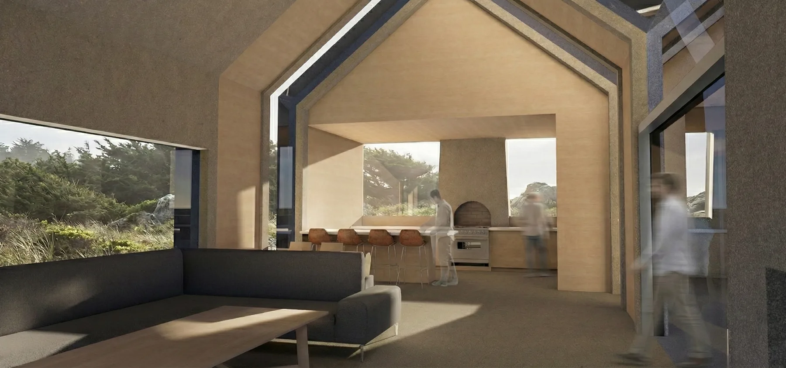
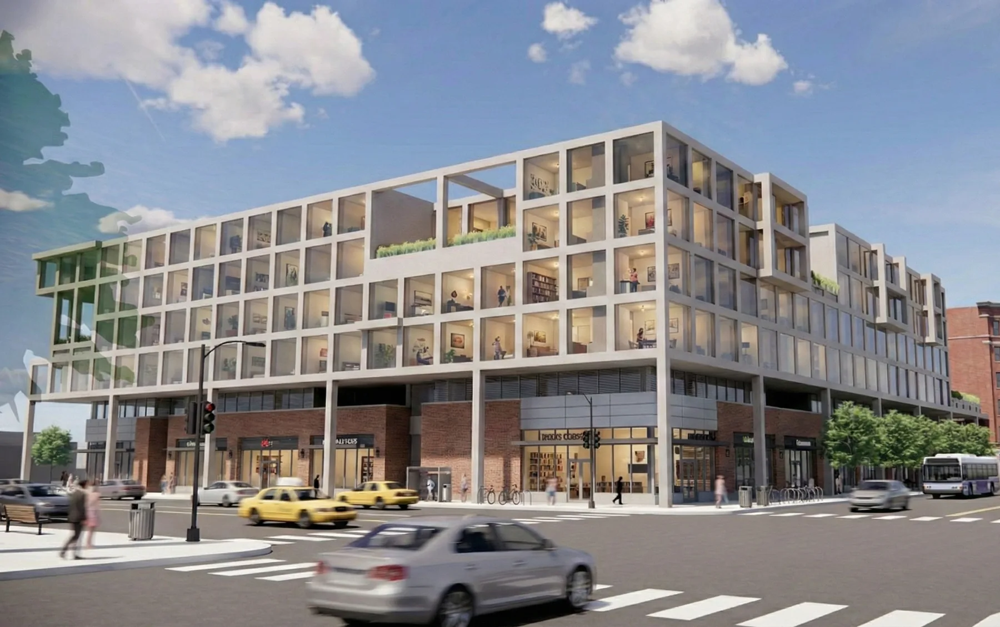
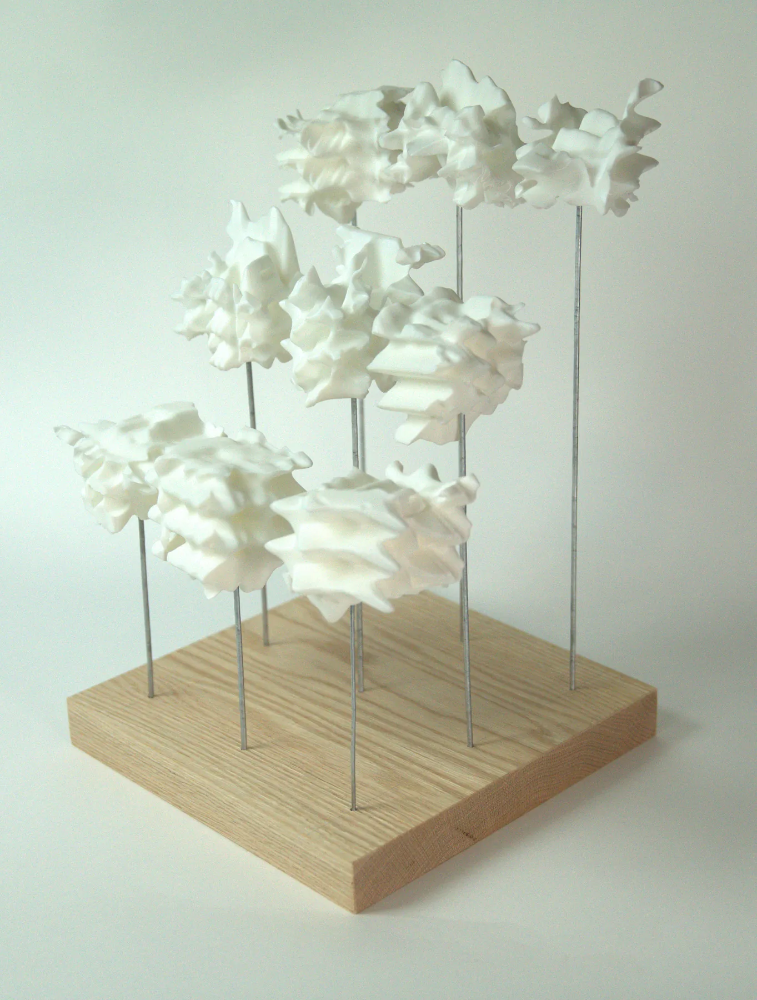
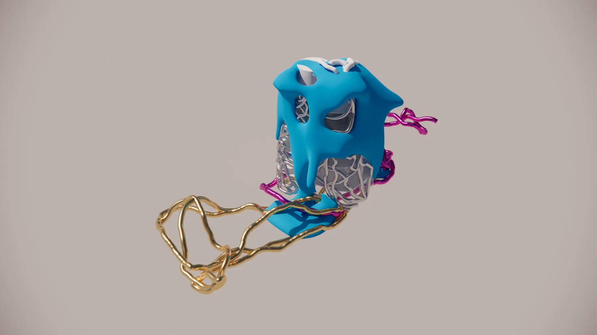

W.01
Cyprus Cove
A small coastal vacation house organized around a protected courtyard — a tectonic elevation set against a stereotomic one.
SketchUp · Enscape
Planner and project manager with experience in construction management, building retrofits, and design — now an M.Arch candidate at the Illinois School of Architecture focusing on building performance and analysis.

A small coastal vacation house organized around a protected courtyard — a tectonic elevation set against a stereotomic one.
SketchUp · Enscape

Mixed-use community hub balancing program density with street-level porosity.
SketchUp · Enscape
A data pipeline estimating peak heating and cooling loads for ~130M U.S. residential records via ResStock.
Airborne electromagnetic surveying applied to groundwater characterization.
Framework linking installation water resilience to regional context.

Traffic, solar, and pedestrian attraction in Suseong-gu, Daegu driven into the form itself through multi-objective optimization.
Grasshopper · Wallacei X · YOLO v.7 · Ladybug

Context extracted from a fine-tuned image model rather than from a site — a study in the absurdity of synthetic context.
Grasshopper · Flux LoRA · Karamba3D · Wallacei X